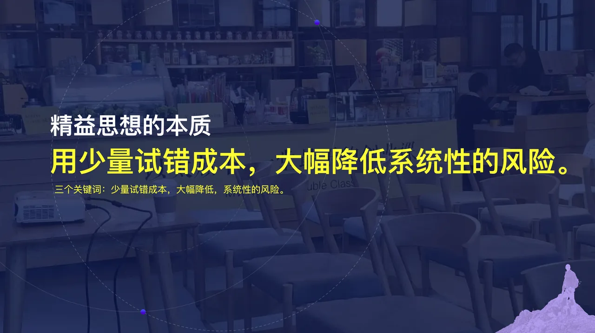
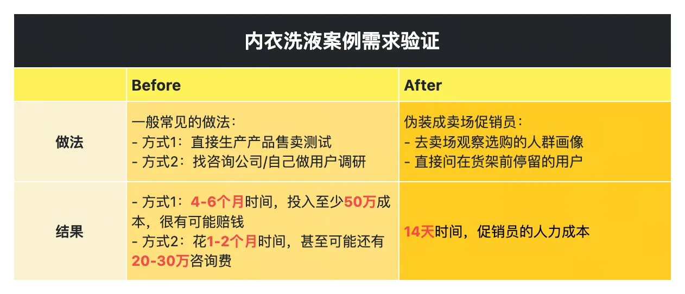
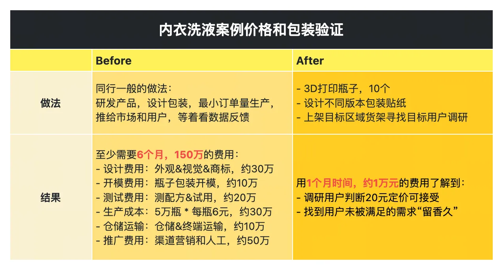
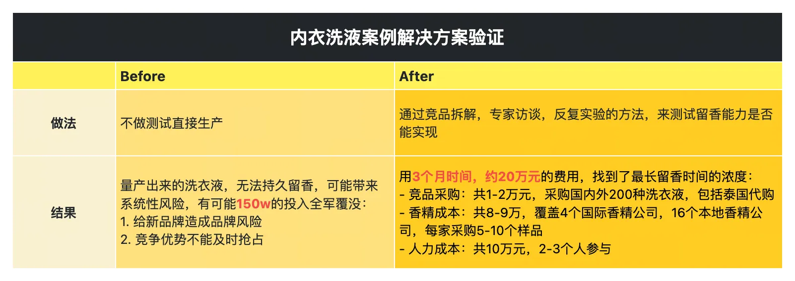
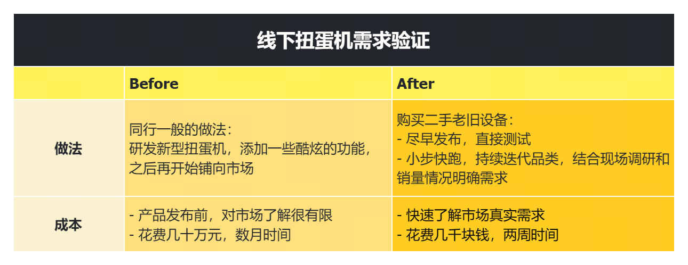
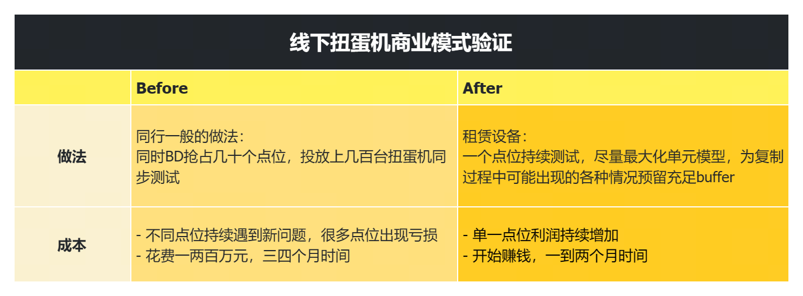
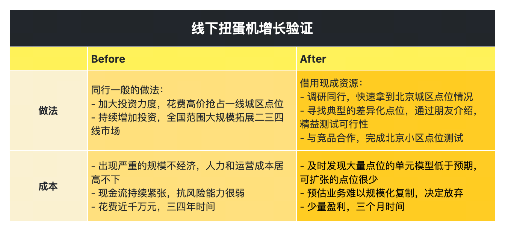
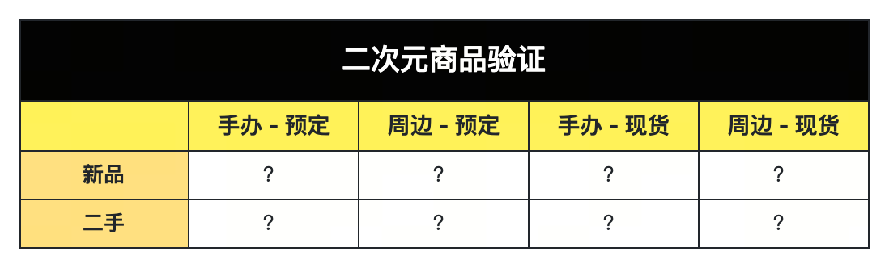
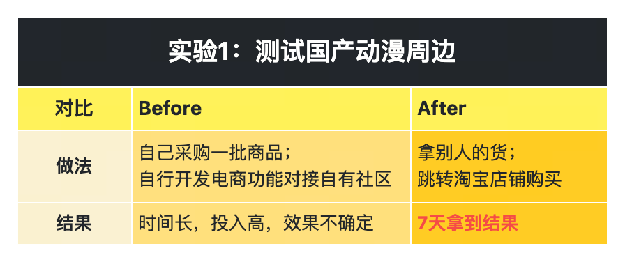
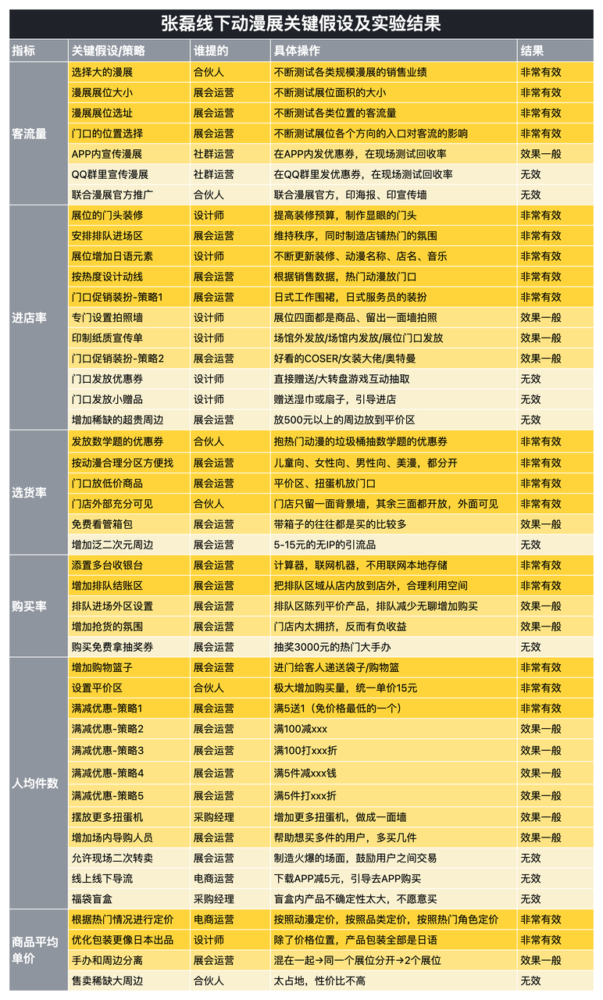

01 / EVIDENCE
学习证据与边界
已登录 Chrome 中读取主课、主课件与 3 个 Candy，保存原创摘要、机器索引和代表性视觉证据；作业按用户要求提交，答案未公开，学习笔记未写回个人界面。
精益不是“尽量不花钱”，而是用与系统性风险相匹配的最小试错成本，提前获得足以改变决策的证据。
02 / CASEBOOK
129 个案例的六个判断镜头
不要按行业背案例，要按业务死亡方式检索案例。每个镜头对应一个不同的证据问题。
关键假设
哪条假设一错，业务会直接失效？先处理前置、高风险、低成本可验证的问题。
需求判断
谁在什么场景下，为什么必须改变？兴趣、认同和竞品存在都不是付费证据。
产品内核
用户真正购买的最小结果是什么？功能表不能代替可用、可付费和可信任。
商业模式
以什么单位赚钱？收入要覆盖获取、交付、退款、售后、库存和生命周期成本。
调研
当前缺常识、行业情报还是行为证据？调研必须包含反例、上下游和替代解释。
精益
怎样在承诺资源前拿到证据？MVP 是实验，不是功能更少的正式产品。
03 / PATTERNS
跨案例反复出现的误判
这些模式比单个行业结论更适合放进商业教练的 RAG。
| 代表案例 | 容易误判 | 应当追问 |
|---|---|---|
| 餐饮调味料平台 | 需求成立就等于业务成立。 | 账期、标准化、增长和团队复制分别过关了吗？ |
| 5G 项目 | 完整方案能体现专业性。 | 付款方是谁，先用什么行为证明它愿意买？ |
| K12 直播平台 | 内容被接受就证明结果改善。 | 样本、指标和所声称结果是否匹配？ |
| 酒店智能管家 | 场景越全，产品越接近成功。 | 哪个单一场景足以产生可验证价值？ |
| 保险聊天机器人 | 技术与知识库天然是壁垒。 | 团队真实拥有哪项交付能力，外部供应变化后还剩什么？ |
| 数字广告追踪 SaaS | 月收入和毛利率代表单位经济。 | 客户生命周期贡献扣除全部成本后是否为正？ |
| 跨城市 O2O 物流 | App 是业务最重要的资产。 | 真正风险是价格、获客、服务标准还是产品界面？ |
| VR 项目 | 融资会提高成功概率。 | 资金是在消除不确定性，还是放大尚未验证的技术押注？ |
04 / EXPERIMENTS
张磊的三个业务实验
相同方法在消费品、线下设备和电商中落地：先拿认知，再做产品；先算利润，再谈规模。
内衣洗衣液
需求 → 购买 → 能力 → 增长有人要吗
在货架前观察并访谈，约 14 天定位 20-35 岁女性、经期血渍和小瓶易操作需求。
能卖动吗
3D 打印瓶、手贴 10 版包装，以约 1 个月和 1 万元测试价格、外观与卖点。
能实现吗
生物酶解决血渍，微胶囊延长留香；多场景测试用较高成本降低品牌与复购风险。
能卖爆吗
先买现成积木测试赠品假设，再定制放大。先验证营销机制，避免百万级开模与量产押注。
线下扭蛋机
卖什么 → 能赚钱 → 能规模化卖什么
用二手机器和少量玩具 5 天发布；约两周确认儿童玩具，热点周边库存则构成反例。
能赚钱
通过点位、展示、浮动定价和二维码支付调出单点月收入约 1 万、毛利约 4200 的模型。
能规模化
异地与小区实验暴露购买力、教育成本、季节性、稀缺点位和租金议价，最终否定全国复制。
动漫社区电商
业务 → 品类 → 渠道能卖货吗
借国产货失败，再给竞争商家导流验证带货；但首年用户价值估算仍低于获客成本。
卖什么
对 8 种组合逐轮排除。高流水仍可能因退货、货损、税费和滞销亏损，最终跑通日本二手周边现货。
怎么卖
线上嵌淘宝，线下从摆摊到漫展。优惠券提高进店，购物篮提高客单，但大展位仍要重新算利润。
05 / OPERATING LOOP
“调通”业务的执行闭环
每轮实验只处理一个主变量。局部通过后，下一关会出现新的成本和约束。
里程碑需求 / 内核 / 赚钱 / 增长
假设一错即死的前置变量
证据当前最缺哪一层
实验借资源、最小动作
结果行为、付款、利润
更新停止 / 调整 / 继续
复制新渠道与新成本复测
06 / AI & INTERNET
迁移到 AI 与互联网创业
把“假包装、借资源、货架观察、单点盈利”翻译成原型、人工闭环、工作流观察和多租户复制。
| 课程动作 | AI / 互联网动作 |
|---|---|
| 假商品包装 | 交互原型、假按钮、结果样例、人工生成报告，先测任务与付费。 |
| 借用现成资源 | 先用模型 API、人工审核和现有 SaaS 拼闭环，不急着自训模型。 |
| 货架现场观察 | 进入用户工作流，观察输入、交接、异常、等待和责任成本。 |
| 单点位赚钱 | 单客户可用不代表多租户、安全、合规和销售交付可复制。 |
| 上游技术能力 | 基础模型不是自己的壁垒；数据权利、评估、集成和信任才可能积累。 |
AI 最小闭环五问
- 用户是否把真实任务交给系统？
- 结果是否有可操作的正确性判据？
- 失败时由谁兜底，成本和责任是什么？
- 推理、人工、集成和支持成本是否被价格覆盖？
- 反馈数据能否合法回流并改善指定指标？
07 / VISUAL EVIDENCE
关键课件图解
图像用于定位方法和实验结构；课程自报数据不等于外部审计，也不能证明其他业务必然复现。










08 / STATUS
当前可声明与不可声明
学习完成度按证据记录，不用“已打开页面”冒充“已掌握并完成平台任务”。
主课与案例
- 129 个案例标题与 6 个主题建立索引。
- 主课三案例的假设、实验、结果与边界完成原创总结。
- 234 张课件图完成机器索引，代表图可离线查看。
- 课程数字保留“课程自报”边界。
Candy 与作业
- 1791：三个业务五步画布已比较。
- 1792：11 组答疑与 2 张核心图已学习。
- 1793：两份运营记录与 3 个表格工作表已核验。
- 作业 answerId 1680021；未公开，笔记未写回个人界面。